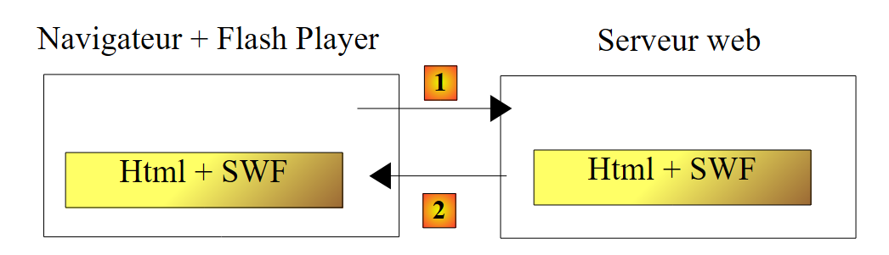
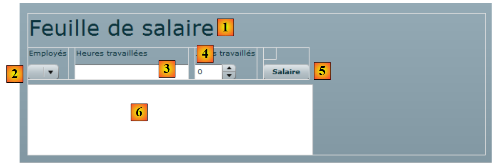
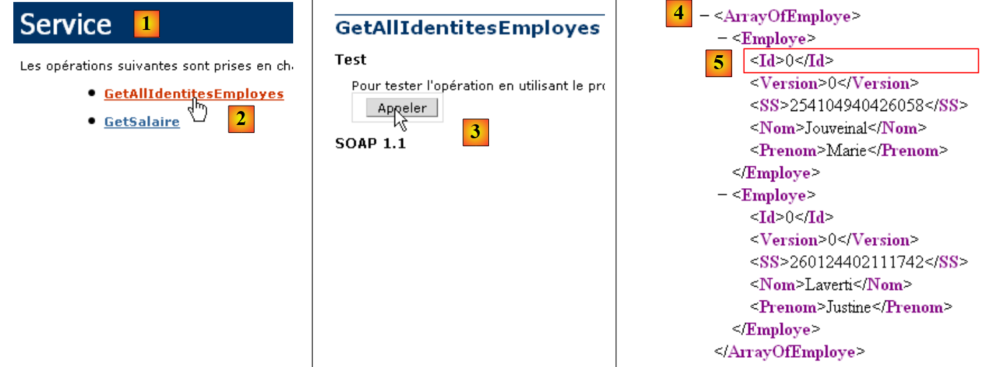
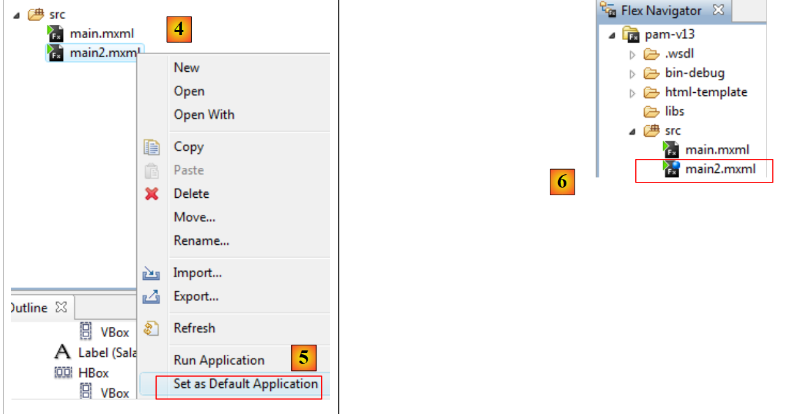
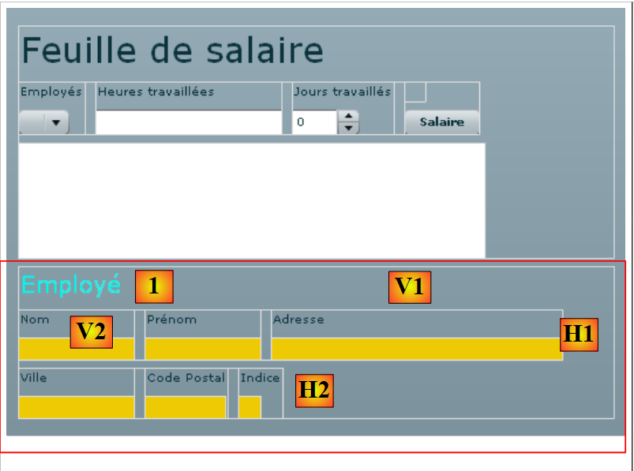
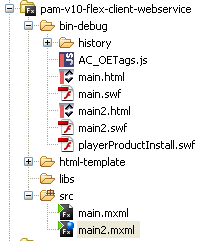
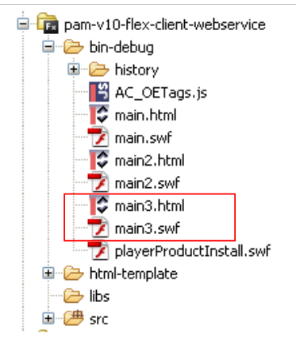

14. The [SimuPaie] application – version 10 – a Flex client for an ASP.NET web service
We now present a Flex client for the ASP.NET web service, version 5. The IDE used is Flex Builder 3. A demo version of this product can be downloaded at the URL [https://www.adobe.com/cfusion/tdrc/index.cfm?loc=fr_fr&product=flex]. Flex Builder 3 is an Eclipse-based IDE. Additionally, to run the Flex client, we use an Apache web server from the Wamp tool [http://www.wampserver.com/]. Any Apache server will work. The browser displaying the Flex client must have Flash Player version 9 or higher installed.
Flex applications are unique in that they run within the browser’s Flash Player plugin. In this respect, they are similar to Ajax applications, which embed JavaScript scripts in the pages sent to the browser, which are then executed within the browser. A Flex application is not a web application in the usual sense: it is a client application for services delivered by web servers. In this respect, it is analogous to a desktop application that would be a client for those same services. It differs, however, in one respect: it is initially downloaded from a web server into a browser equipped with the Flash Player plugin capable of running it.
Like a desktop application, a Flex application consists primarily of two elements:
- a presentation layer: the views displayed in the browser. These views offer the same richness as desktop application windows. A view is described using a markup language called MXML.
- a code section that primarily handles events triggered by user actions on the view. This code can be written in MXML or in an object-oriented language called ActionScript. There are two types of events to distinguish:
- events that require communication with the web server: populating a list with data provided by a web application, submitting form data to the server, etc. Flex provides a number of methods for communicating with the server in a way that is transparent to the developer. These methods are asynchronous by default: the user can continue to interact with the view while the server request is in progress.
- events that modify the displayed view without exchanging data with the server, such as dragging an item from a tree and dropping it into a list. This type of event is handled entirely locally within the browser.
A Flex application is often executed as follows:
 |
- in [1], an HTML page is requested
- in [2], it is sent. It includes a SWF (ShockWave Flash) binary file containing the entire Flex application: all views and their event-handling code. This file will be executed by the browser’s Flash Player plugin.
 |
- The Flex client runs locally in the browser except when it needs external data. In that case, it requests it from the server [3]. It receives it in [4] in various formats: XML or binary. The application queried on the web server can be written in any language. Only the response format matters.
We have described the execution architecture of a Flex application so that the reader can understand the difference between it and that of a traditional web application, where pages do not embed code (JavaScript, Flex, Silverlight, etc.) that the browser would execute. In the latter, the browser is passive: it simply displays HTML pages built on the web server that sends them to it.
14.1. Client/server application architecture
The client/server architecture implemented here is similar to that of versions 6 and 8:
 |
In [1], the ASP.NET web layer is replaced by a Flex web layer written in MXML and ActionScript. The client [C] will be generated by the Flex Builder IDE. It should be noted here that this architecture includes two web servers not shown:
- an ASP.NET web server that runs the web service [S]
- an Apache web server that runs the web client [1] ## 14.2. **The Flex 3 client project**
We build the Flex client using the Flex Builder 3 IDE:
 |
- in Flex Builder 3, create a new project in [1]
- we give it a name in [2] and specify in [3] which folder to generate it in
 |
- in [4], we name the main application (the one that will be executed)
- in [5], the project once generated
- in [6], the application’s main MXML file
- An MXML file contains a view and the code for handling its events. The [Source] tab [7] provides access to the MXML file. There you will find <mx> tags describing the view as well as ActionScript code.
- The view can be built graphically using the [Design] tab [8]. The MXML tags describing the view are then automatically generated in the [Source] tab. The reverse is also true: MXML tags added directly in the [Source] tab are reflected graphically in the [Design] tab. ## 14.3. **View No. 1**
We will gradually build a web interface similar to that of Version 1 (see Section 4). First, we will build the following interface:
 |
- in [1], the view when the connection to the web service was successful. The employee dropdown is then populated.
- in [2], the view when the connection to the web service failed. An error message is then displayed.
The client’s main file [main.xml] is as follows:
<?xml version="1.0" encoding="utf-8"?>
<mx:Application xmlns:mx="http://www.adobe.com/2006/mxml" layout="vertical"
creationComplete="init()">
<mx:VBox width="100%">
<mx:Label text="Pay stub" fontSize="30"/>
<mx:HBox>
<mx:VBox>
<mx:Label text="Employees"/>
<mx:ComboBox id="cmbEmployees" dataProvider="{employees}" labelFunction="displayEmployee"/>
</mx:VBox>
<mx:VBox>
<mx:Label text="Hours worked"/>
<mx:TextInput id="txtHoursWorked"/>
</mx:VBox>
<mx:VBox>
<mx:Label text="Days worked"/>
<mx:NumericStepper id="daysWorked" minimum="0" maximum="31" stepSize="1"/>
</mx:VBox>
<mx:VBox>
<mx:Label text=""/>
<mx:Button id="btnSalary" label="Salary"/>
</mx:VBox>
</mx:HBox>
<mx:TextArea id="msg" minWidth="400" minHeight="100" editable="false" visible="true" enabled="true" horizontalScrollPolicy="auto" verticalScrollPolicy="auto" x="0" y="0" maxHeight="100" maxWidth="400"/>
</mx:VBox>
<mx:WebService ...>
...
</mx:WebService>
<mx:Script>
<![CDATA[
...
// data
[Bindable]
private var employees : ArrayCollection;
private function init():void{
...
}
]]>
</mx:Script>
</mx:Application>
In this code, several elements should be distinguished:
- the application definition (lines 2–3)
- the description of its view (lines 4–25)
- the ActionScript event handlers within the <mx:Script> tag (lines 31–42)
- the definition of the remote web service (lines 27–29)
Let’s start by commenting on the definition of the application itself and the description of its view:
- Lines 2–3: define:
- the layout of the components within the view container. The layout="vertical" attribute indicates that the components will be arranged one below the other.
- the method to be executed when the view has been instantiated, i.e., when all its components have been instantiated. The attribute creationComplete="init();" indicates that the init method on line 38 must be executed. creationComplete is one of the events that the Application class can emit.
- Lines 4–25 define the view’s components
- Lines 4–25: a vertical container: the components will be placed one below the other
- Line 5: defines a text component
- Lines 6–23: a horizontal container: components will be placed horizontally within it.
- Lines 7–10: a vertical container that will hold text and a drop-down list
- line 8: the text
- line 9: the drop-down list in which the list of employees will be placed. The dataProvider="{employees}" tag specifies the data source that should populate the list. Here, the list will be populated with the employees object defined on line 36. To be able to write dataProvider="{employees}", the employees field must have the [Bindable] attribute (line 35). This attribute allows an ActionScript variable to be referenced outside the <mx:Script> tag. The employees field is of type ArrayCollection, an ActionScript type that allows you to store lists of objects, in this case a list of objects of type Employee.
- Lines 11–14: a vertical container that will hold text and an input field
- line 12: the text
- Line 13: the input field for hours worked.
- lines 15-18: a vertical container that will hold text and a counter
- line 16: the text
- line 17: the counter for entering days worked
- Lines 19–22: a vertical container that will hold text and a button that will trigger the calculation of the salary for the person selected in the dropdown.
- Line 20: the text
- line 21: the button.
- line 23: end of the horizontal container started on line 6
- Line 24: a text area in a TextArea component. It will display error messages.
- Line 25: End of the vertical container started on line 4
Lines 4–25 generate the following view in the [Design] tab:
 |
- [1]: was generated by the Label component on line 5
- [2]: was generated by the ComboBox component on line 9
- [3]: was generated by the TextInput component on line 13
- [4]: was generated by the NumericStepper component on line 17
- [5]: was generated by the Button component on line 21
- [6]: was generated by the TextArea component on line 24
Now let’s examine the declaration of the remote web service:
<mx:WebService id="pam"
wsdl="http://localhost:1077/Service1.asmx?WSDL"
fault="wsFault(event);"
showBusyCursor="true">
<mx:operation
name="GetAllEmployeeIDs"
result="loadEmployeesCompleted(event)"
fault="loadEmployeesFault(event);">
<mx:request/>
</mx:operation>
</mx:WebService>
- line 1: the web service is a component with the identifier "pam" (id attribute)
- line 2: the URI of the web service's WSDL file (see section 9.2)
- line 3: the method to execute in case of an error during communication with the web service: the wsFault method.
- line 4: requests that an indicator be displayed to show the user that an exchange with the web service is in progress.
- Lines 5–10: one of the operations offered by the remote web service. Here, the GetAllIdentitesEmployes method.
- line 7: the method to execute when the call to this method completes successfully, i.e., when the web service successfully returns the list of employees
- Line 8: The method to execute when the call to this method ends with an error.
- Line 9: The parameters for the GetAllEmployeeIDs operation. We know that this method does not expect any parameters. Therefore, we leave the <mx:request> tag empty.
Let’s now examine the ActionScript code linked to the web service:
<mx:Script>
<![CDATA[
import mx.rpc.events.FaultEvent;
import mx.collections.ArrayCollection;
import mx.rpc.events.ResultEvent;
// data
[Bindable]
private var employees : ArrayCollection;
private function init():void{
// Record the coordinates of the message area
msgHeight = msg.height;
msgWidth = msg.width;
// hide the message area
hideMsg();
// Send a request to the remote web service to retrieve the simplified list of employees
pam.GetAllEmployeeIdentities.send();
}
private function wsFault(event:Event):void{
// report the error
msg.text="Remote service unavailable";
showMsg();
}
private function loadEmployeesCompleted(event:ResultEvent):void{
// populate the employees combo box
employees = event.result as ArrayCollection;
}
private function displayEmployee(employee:Object):String{
// Employee details
return employee.FirstName + " " + employee.LastName;
}
private function loadEmployeesFault(event:FaultEvent):void{
// display error message
msg.text = event.fault.message;
// form
showMsg();
}
// block management
private var msgWidth:int;
private var msgHeight:int;
private function hideMsg():void{
msg.height = 0;
msg.width = 0;
}
private function showMsg():void{
msg.height = msgHeight;
msg.width = msgWidth;
}
]]>
</mx:Script>
- Line 11: The init method is executed when the application starts because we wrote:
<mx:Application xmlns:mx="http://www.adobe.com/2006/mxml" layout="vertical"
creationComplete="init()">
- lines 13-14: we store the height and width of the message area. We use two methods, hideMsg (lines 48-51) and showMsg (lines 53-56), to hide or show the message area, respectively, depending on whether an error occurred or not. The hideMsg method hides the message area by setting its height and width to 0. The showMsg method displays the message area by restoring the height and width stored in the init method.
- Line 16: The message area is hidden. Initially, there is no error.
- Line 18: The GetAllIdentitesEmploye method (line 6 of the web service) of the pam web service (line 1 of the web service) is called. The call is asynchronous. Line 7 of the web service indicates that the loadEmployesCompleted method will be executed if this asynchronous call completes successfully. Line 8 of the web service indicates that the loadEmployesFault method will be executed if this asynchronous call fails.
- Line 27: The loadEmployesCompleted method, which is executed if the web service call on line 18 completes successfully.
- Line 29: We know that the web service returns an XML response. It is helpful to refer back to this to understand the ActionScript code:
 |
- in [1], the web service page [Service.asmx]
- in [2], the link to the test page for the [GetAllIdentitesEmployes] method
- in [3], the test is performed. No parameters are expected.
- In [4]: The XML response contains an array of employees. For each employee, there are five pieces of information enclosed within the <Id>, <Version>, <SS>, <LastName>, and <FirstName> tags. If the XML response is stored in an `employees` array of type `ArrayCollection`:
- employees.getItemAt(i): is the i-th element of the array
- employees.getItemAt(i).SS: is this employee’s Social Security number.
- employees.getItemAt(i).LastName: is the last name of that employee
- ...
Let’s return to the ActionScript code:
- line 29: event.result represents the XML response from the web service. The GetAllIdentitesEmployes method returns an array of employees. event.result represents this array of employees. It is stored in a variable of type ArrayCollection, a type that generally represents a collection of objects. This variable, named employees, is declared on line 9. Recall that this variable is the data source for the employees combo box:
<mx:ComboBox id="cmbEmployes" dataProvider="{employes}" labelFunction="displayEmploye"/>
For each employee in its data source, the combo box will call the displayEmploye method (labelFunction attribute) to display the employee. Lines 32–34 show that this method displays the employee’s first and last names.
- Line 37: The loadEmployesFault method, which is executed if the call to the web service on line 18 fails. event.fault.message is the error message returned by the web service.
- Line 39: This error message is placed in the message box
- Line 41: The message box is displayed.
Once the application has been built, its executable code is located in the [bin-debug] folder of the Flex project:
 |
Above,
- the [main.html] file represents the HTML file that the browser will request from the web server to obtain the Flex client
- the [main.swf] file is the Flex client binary that will be embedded in the HTML page sent to the browser and then executed by the browser’s Flash Player plugin.
We are ready to run the Flex client. First, we need to set up the runtime environment it requires. Let’s return to the client/server architecture we tested:
 |
Server-side:
- Start the ASP.NET web service [S]
Client side:
- Start the Apache server that will serve the Flex application.
Here we are using the Wamp tool. With this tool, we can assign an alias to the [bin-debug] folder of the Flex project.
 |
- The Wamp icon is at the bottom of the screen [1]
- Left-click on the Wamp icon, select the Apache option [2] / Alias Directories [3, 4]
- Select the [5] option: Add an alias
 |
- In [6], give an alias (any name) to the web application that will be executed
- In [7], specify the root of the web application that will use this alias: this is the [bin-debug] folder of the Flex project we just built.
Let’s review the structure of the [bin-debug] folder in the Flex project:
 |
The [main.html] file is the HTML file for the Flex application. Thanks to the alias we just created for the [bin-debug] folder, this file will be accessible via the URL [http://localhost/pam-v10-flex-client-webservice/main.html]. We access this URL in a browser with the Flash Player plugin version 9 or higher:
 |
- in [1], the URL of the Flex application
- in [2], the employee dropdown when everything is working properly
- in [3], the result when the web service is stopped
You might be curious to view the source code of the received HTML page:
- The body of the page begins on line 25. It does not contain standard HTML but an object (line 28) of type "application/x-shockwave-flash" (line 41). This is the [main.swf] file (line 31) found in the [bin-debug] folder of the Flex project. It is a large file: approximately 600 KB for this simple example. ## 14.4. **View #2**
We will add a new VBox container to the current view:
 |
 |
- In [4,5], we set [main2.mxml] as the new default application. This is the one that will now be compiled.
- In [6], the default application is indicated by a blue dot.
Container [1] will display information about the employee selected in the combo box [2]. We duplicate [main.xml] as [main2.xml] [3] to build the new view. We will now work with [main2.xml].
 |
The change made to the previous project is the addition of the container on line 26 above, which contains the MXML code for the view’s [1] container. We give it the identifier employe so we can manipulate it via code. This container must be able to be hidden or shown using the same technique previously used for the message area.
Let’s return to the view’s visual layout:
 |
Let’s identify the different containers for the new displayed information:
- V1: vertical container for all components: the "Employee [1]" label and the horizontal containers [H1] and [H2]
- H1: horizontal container for the Last Name, First Name, and Address information
- V2: vertical container for the "Last Name" label and the display of the employee's last name.
- H2: horizontal container for the City, Zip Code, and Index information
The complete code for the "employe" container is as follows:
<mx:VBox id="employe" width="100%">
<mx:Label text="Employee" fontSize="20" color="#09F3EB"/>
<mx:HBox>
<mx:VBox >
<mx:Label text="Last Name"/>
<mx:VBox backgroundColor="#EECA05">
<mx:Text id="lblName" minWidth="100" minHeight="20" fontFamily="Verdana" textAlign="center"/>
</mx:VBox>
</mx:VBox>
<mx:VBox >
<mx:Label text="First Name"/>
<mx:VBox backgroundColor="#EECA05">
<mx:Text id="lblFirstName" minWidth="100" minHeight="20" fontFamily="Verdana" textAlign="center"/>
</mx:VBox>
</mx:VBox>
<mx:VBox >
<mx:Label text="Address"/>
<mx:VBox backgroundColor="#EECA05">
<mx:Text id="lblAddress" minWidth="250" minHeight="20" fontFamily="Verdana" textAlign="center"/>
</mx:VBox>
</mx:VBox>
</mx:HBox>
<mx:HBox>
<mx:VBox >
<mx:Label text="City"/>
<mx:VBox backgroundColor="#EECA05">
<mx:Text id="lblCity" minWidth="100" minHeight="20" fontFamily="Verdana" textAlign="center"/>
</mx:VBox>
</mx:VBox>
<mx:VBox >
<mx:Label text="Zip Code"/>
<mx:VBox backgroundColor="#EECA05">
<mx:Text id="lblZipCode" minWidth="70" minHeight="20" fontFamily="Verdana" textAlign="center"/>
</mx:VBox>
</mx:VBox>
<mx:VBox >
<mx:Label text="Index"/>
<mx:VBox backgroundColor="#EECA05">
<mx:Text id="lblIndex" minWidth="20" minHeight="20" fontFamily="Verdana" textAlign="center"/>
</mx:VBox>
</mx:VBox>
</mx:HBox>
</mx:VBox>
The code is self-explanatory. Let’s briefly explain the vertical container displaying the employee’s name, for example:
- lines 4–9: the vertical container
- line 5: the "Name" label
- Lines 6–8: A vertical container that will display the employee’s name (line 7). We want to give the fields displaying employee information a different background color. The Text component does not offer this option (or perhaps I didn’t look hard enough). You can set the background color of a container. That is why it was used here.
- Line 7: The Text component that will display the employee’s name. We set a minimum height and width for it.
We will use the "employee" container to display the employee information that the user selects from the employee dropdown, independently of the [Salary] button, which will later be used to calculate the salary once all necessary information has been entered.
To handle the change in selection in the "employees" combo box, its MXML code changes as follows:
<mx:ComboBox id="cmbEmployes" dataProvider="{employes}" labelFunction="displayEmploye" change="displayInfosEmploye();"/>
The change event is triggered by the combo box when the user changes their selection. The handler for this event will be the displayInfosEmploye method.
Let’s review the methods exposed by the remote web service:
// list of all employee IDs
public Employee[] GetAllEmployeeIDs();
// ------- salary calculation
public Payroll GetSalary(string ss, double hoursWorked, int daysWorked);
Here, we want to display the information (last name, first name, etc.) for the employee selected in the dropdown. The web service does not expose a method to retrieve this information. However, we can use the GetSalary method by passing the selected employee’s SSN and 0 for hours and days worked. A redundant salary calculation will be performed, but the GetSalary method will return a PayStub object containing the information we need.
The current web service declaration is modified to include the definition of the GetSalaire method:
<mx:WebService id="pam"
wsdl="http://localhost:1077/Service1.asmx?WSDL"
fault="wsFault(event);"
showBusyCursor="true">
<mx:operation
name="GetAllEmployeeIDs"
result="loadEmployeesCompleted(event)"
fault="loadEmployeesFault(event);">
<mx:request/>
</mx:operation>
<mx:operation name="GetSalary"
result="getSalaryCompleted(event)"
fault="getSalaryFault(event);">
<mx:request>
<ss>{employees.getItemAt(cmbEmployees.selectedIndex).SS}</ss>
<hoursWorked>{hoursWorked}</hoursWorked>
<daysWorked>{daysWorked}</daysWorked>
</mx:request>
</mx:operation>
</mx:WebService>
- lines 11-19: the definition of the GetSalary method of the web service
- line 12: defines the method to execute when the call to the GetSalaire method succeeds
- line 13: defines the method to execute when the call to the GetSalaire method fails
- lines 14-18: the GetSalaire method expects three parameters. They are defined inside an <mx:request> tag in the form <param1>value1</param1>. The identifier param1 cannot be arbitrary. You must use the names expected by the web service:
 |
- in [1], the web service page [http://localhost:1077/Service1.asmx]
- in [2], the link to the method's test page [GetSalaire]
- in [3], the parameters expected by the method. These are the names that must be used as child tags of the <mx:request> tag.
Let’s return to the web service declaration:
<mx:operation name="GetSalaire"
result="getSalaireCompleted(event)"
fault="getSalaireFault(event);">
<mx:request>
<ss>{employees.getItemAt(cmbEmployees.selectedIndex).SS}</ss>
<hoursWorked>{hoursWorked}</hoursWorked>
<daysWorked>{daysWorked}</daysWorked>
</mx:request>
</mx:operation>
- Line 5: the ss parameter. Recall that when the Flex application starts, the array of all employees was stored in a variable named employees of type ArrayCollection.
- employees.getItemAt(i): is employee number i in the array
- employees.getItemAt(i).SS: is this employee's social security number.
- cmbEmployees.selectedIndex: is the index of the selected item in the employees combo box cmbEmployees.
In the code above, how do we know that SS is an employee’s social security number? To answer this, we need to refer back to the response sent by the GetAllIdentitesEmployes method:
 |
- in [1], the [Service.asmx] web service page
- in [2], the link to the test page for the [GetAllIdentitesEmployes] method
- in [3], the test is performed. No parameters are expected.
- In [4]: The XML response contains an array of employees. This array is stored in the `employees` variable. As shown in [5], `SS` is indeed the tag used to store the Social Security number.
Let’s conclude our examination of the web service:
<mx:operation name="GetSalaire"
result="getSalaireCompleted(event)"
fault="getSalaireFault(event);">
<mx:request>
<ss>{employees.getItemAt(cmbEmployees.selectedIndex).SS}</ss>
<hoursWorked>{hoursWorked}</hoursWorked>
<daysWorked>{daysWorked}</daysWorked>
</mx:request>
</mx:operation>
- line 6: the number of hours worked will be provided by a variable hoursWorked
- line 6: the number of days worked will be provided by a variable daysWorked
These variables must be declared within the <mx:Script> tag with the [Bindable] attribute, which allows them to be referenced by MXML components (lines 7–10 below).
<mx:Script>
<![CDATA[
...
// data
[Bindable]
private var employees : ArrayCollection;
[Bindable]
private var hoursWorked: Number;
[Bindable]
private var workDays: int;
...
</mx:Script>
The view's event handling code changes as follows:
<mx:Script>
<![CDATA[
import mx.rpc.events.FaultEvent;
import mx.collections.ArrayCollection;
import mx.rpc.events.ResultEvent;
// data
[Bindable]
private var employees: ArrayCollection;
[Bindable]
private var hoursWorked: Number;
[Bindable]
private var workDays: int;
private function init():void{
// record the height and width of # blocks
employeeHeight = employee.height;
employeeWidth = employee.width;
// hide certain elements
hideEmployee();
...
}
private function displayEmployeeInfo():void{
// form
hideEmployee();
// calculate a fictitious salary
hoursWorked = 0;
daysWorked = 0;
pam.GetSalary.send();
}
private function getSalaryCompleted(event:ResultEvent):void{
...
}
private function getSalaryFault(event:FaultEvent):void{
...
}
// partial views -------------------------------------------------
private var employeeHeight: int;
private var employeeWidth: int;
private function hideEmployee():void{
employee.height = 0;
employee.width = 0;
}
private function showEmployee():void{
employee.height = employeeHeight;
employee.width = employeeWidth;
}
]]>
</mx:Script>
- Line 15: The init method, executed when the Flex application starts, stores the height and width of the vertical employee container so that it can be restored (lines 50–53) after being hidden (lines 45–48).
- line 24: The displayInfosEmploye method is executed when the user changes their selection in the employee combo box.
- Line 26: The employee container is hidden if it was previously visible
- Line 30: The web service’s GetSalary method is called asynchronously. We know it expects three parameters:
<ss>{employees.getItemAt(cmbEmployees.selectedIndex).SS}</ss>
<hoursWorked>{hoursWorked}</hoursWorked>
<daysWorked>{daysWorked}</daysWorked>
- Line 1: The ss parameter will be the SS number of the employee selected in the employee combo box
- line 2: the displayInfosEmploye method assigns the value 0 to the hoursWorked variable (line 28)
- line 3: the displayInfosEmploye method assigns the value 0 to the daysWorked variable (line 29)
The GetSalaireCompleted method is executed if the GetSalaire method of the web service completes successfully:
private function getSalaireCompleted(event:ResultEvent):void{
// hide the error message
hideMsg();
// We receive a pay stub
var payStub:Object = event.result;
// display
lblLastName.text = payStub.Employee.LastName;
lblLastName.text = payStub.Employee.LastName;
lblAddress.text = paystub.Employee.Address;
lblCity.text = PayrollSheet.Employee.City;
lblZipCode.text = Payroll.Employee.ZipCode;
lblIndex.text = Payroll.Employee.Index;
showEmployee();
}
- Line 3: We hide the message box in case it is displayed.
- Line 5: We retrieve the pay stub returned by the GetSalary method
To find out exactly what the GetSalaire method returns, we go back to the web service page:
 |
- [1] is the web service page [Service.asmx]
- in [2], the link leading to the test page for the [GetSalaire] method
- in [3], we provide parameters
- in [4], the resulting XML.
Let’s return to the getSalaireCompleted method:
private function getSalaireCompleted(event:ResultEvent):void{
// hide the error message
hideMsg();
// we receive a pay stub
var payslip:Object = event.result;
// display
lblLastName.text = payStub.Employee.LastName;
lblLastName.text = payStub.Employee.LastName;
lblAddress.text = paystub.Employee.Address;
lblCity.text = PayrollSheet.Employee.City;
lblZipCode.text = PayrollSheet.Employee.ZipCode;
lblIndex.text = PayrollSheet.Employee.Allowances.Index;
showEmployee();
}
- Line 5: PayrollSheet = event.result represents the XML feed [4] returned by the GetSalary method. From this feed, we can see that:
- payrollSheet.Employee is the XML stream for an employee
- sheetSalary.Employee.Name is the name of this employee
- ...
- lines 7–12: the Payroll.Employee XML feed is used to populate the various fields of the employee container.
- line 13: the employee container is displayed.
The getSalaireFault method is executed if the GetSalaire method of the web service fails:
private function getSalaireFault(event:FaultEvent):void{
// display error message
msg.text = event.fault.message;
// form
showMsg();
}
- Line 3: The error message event.fault.message is placed in the message box
- line 5: the message box is displayed
This concludes the changes required for this new version. When you save it and if the syntax is correct, the executable version is generated in the project’s [bin-debug] folder:
 |
Above, [main2.html] is the HTML page that embeds the Flex application binary [main2.swf], which will be executed by Flash Player.
We can test this new version:
- the ASP.NET web service must be running
- the Apache server must be running for the Flex client
Assuming that the alias [pam-v10-flex-client-webservice] used in the previous version still exists, we request the URL [http://localhost/pam-v10-flex-client-webservice/main2.html] from the Apache server in a browser:
 |
 |
- in [1], the requested URL
- in [2], the employee dropdown
- in [3], change the selection in the dropdown to trigger the change event
- in [4], the result obtained: Justine Laverti’s profile. ## 14.5. **View #3**
View 3 handles the form validation. Here, only the "txtHeuresTravaillees" input field is checked. As long as the form is invalid, the "btnSalaire" button will remain disabled.
To add this functionality, we duplicate [main2.mxml] into [main3.mxml]:
 |
From now on, we will work with [main3.mxml], which we will set as the default application (see this concept in section 14.4). First, we add an attribute to the "txtHeuresTravaillees" component:
<mx:TextInput id="txtHeuresTravaillees" change="validateForm(event)"/>
Every time the content of the "txtHeuresTravaillees" input field changes, the validateForm method is called. This is a local method written by the developer. In it, we could verify that the content of the "txtHeuresTravaillees" input field is indeed a positive integer. We will proceed differently by using a validation component:
<mx:NumberValidator id="heuresTravailleesValidator" source="{txtHeuresTravaillees}" property="text"
precision="2" allowNegative="false"
invalidCharError="Invalid characters"
precisionError="No more than two digits after the decimal point"
negativeError="The number of hours must be positive or zero"
invalidFormatCharsError="Invalid format"
required="true"
requiredFieldError="Required field"/>
- line 1: The <mx:NumberValidator> component verifies that another component contains an integer or a real number.
- line 1: The id attribute assigns an identifier to the component.
- line 1: source is the ID of the component being validated by the NumberValidator component. Here, the "txtHeuresTravaillees" input field is being validated.
- Line 1: property is the name of the property of the source component that contains the value to be validated. Ultimately, it is the value source.property that is validated, in this case txtHeuresTravaillees.text.
- Line 2: precision sets the maximum number of decimal places allowed. precision=0 means the entered number must be an integer.
- Line 2: allowNegative specifies whether negative numbers are allowed or not
- Line 7: required specifies whether the entry is mandatory or not.
When a validation condition is not met, an error message is displayed in a tooltip near the invalid component. By default, these messages are in English. You can define these messages yourself:
- (continued)
- invalidCharError: the error message when the text contains a character that cannot appear in a number
- precisionError: the error message when the number of decimal places is incorrect relative to the precision attribute
- negativeError: the error message when the number is negative but the allowNegative="false" attribute is set
- requiredFieldError: the error message when no input has been provided even though the requiredField="true" attribute is set
- invalidFormatCharsError: the error message when the text contains invalid characters or has an invalid format?
Let’s return to the "txtHeuresTravaillees" component:
<mx:TextInput id="txtHeuresTravaillees" change="validateForm(event)"/>
The validateForm method could be as follows within the <mx:Script> tag:
private function validateForm(event:Event):void
{
// validate the hours worked
var evt:ValidationResultEvent = hoursWorkedValidator.validate();
// Validation successful?
btnSalary.enabled = evt.type == ValidationResultEvent.VALID;
}
- Line 4: The "heuresTravailleesValidator" validator is executed. It returns a result of type ValidationResultEvent.
- Line 6: evt.type is of type String and indicates the event type. evt.type has two possible values for the ValidationResultEvent type: "invalid" or "valid," represented by the constants ValidationResultEvent.INVALID and ValidationResultEvent.VALID. If, in line 4, the validation was successful, evt.type must have the value ValidationResultEvent.VALID. In this case, the btnSalaire button is enabled; otherwise, it is disabled.
This is sufficient to test the validity of the hours worked.
 |
Above, compiling the project produced the files [main3.html] and [main3.swf]. We enter the URL [http://localhost/pam-v10-flex-client-webservice/main3.html] in a browser and check for various error cases:
 |
 |
- an incorrect field has a red border [1, 2, 3], a correct field has a blue border [4].
- In [4], note that the [Salary] button is active because the number of hours worked is correct. ## 14.6. **View #4**
View 4 completes the salary calculation form. To do this, we duplicate [main3.xml] into [main4.xml] and now work with main4, which we set as the default application (see section 14.4).
 |
The changes made in [main4.xml] [1] are as follows:
- a new vertical container is added to the view [2] to display the employee’s salary components
- a component for formatting monetary values is added [3]
- the display of salary components is handled by the handler associated with the "click" event of the "btnSalaire" button.
The view evolves as follows:
 |
The new container follows the same principle as the previous one. It is a vertical VBox container [V1] containing four horizontal HBox containers [Hi]. The horizontal containers H1 through H3 consist of vertical containers containing two labels, the second of which is itself inside a vertical container to provide a background color.
Question 1: Write the salary container. It will be referred to as complements hereafter.
Question 2: Write the methods to hide/show the complements container. Draw inspiration from what was done previously for the employee container.
We associate a handler with the "click" event of the "btnSalaire" button:
<mx:Button id="btnSalaire" label="Salary" click="calculateSalary()"/>
The *calculerSalaire* method is as follows:
private function calculateSalary():void{
// prepare form
displaySalary = true;
msg.text="";
// salary calculation parameters
hoursWorked = Number(txtHoursWorked.text);
daysWorked = int(daysWorked.value);
// Request the salary from the web service
pam.GetSalary.send();
}
- Line 3: The boolean displaySalary is used to indicate whether or not to display the complements container, which displays the salary details. The getSalaryCompleted method is executed on two events:
- when the employee is changed in the employee dropdown to display their information without the salary. In this case, salaryDisplay=false is set.
- salary calculation
- Line 6: The text in the txtHeuresTravaillees input field is converted to a real number.
- Line 7: The value of the daysWorked counter is converted to an integer.
- Line 9: The remote GetSalary method is called. Note that this method expects three parameters, including the hoursWorked and daysWorked parameters initialized on lines 6 and 7. Also note that if the asynchronous call to the GetSalary method:
- succeeds, the getSalaireCompleted method will be called
- fails, the getSalaireFault method will be called
Question 3: Complete the current getSalaireCompleted method so that it displays the employee’s salary if the btnSalaire button has been clicked.
Currently, salary items are displayed without the euro symbol. You can include it in the code or use a formatter. This is the approach we are taking now. The formatter will be as follows:
<mx:CurrencyFormatter id="eurosFormatter" precision="2"
currencySymbol="€" useNegativeSign="true"
alignSymbol="right"/>
- Line 1: id is the formatter’s identifier, precision is the number of decimal places to keep.
- Line 2: currencySymbol is the currency symbol to use. useNegativeSign indicates whether or not to use the minus sign for negative values.
- line 3: alignSymbol specifies where to place the currency symbol relative to the number.
This formatter is used in the script code as follows:
- eurosFormatter is the ID of the formatter to use
- format is the method to call to format a number. It returns a string.
- feuilleSalaire.Indemnites.BaseHeure is the number to be formatted.
- lblSH is the name of a Text component.
Question 4: Modify the getSalaireCompleted method so that it uses the currency formatter.